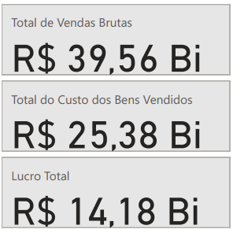
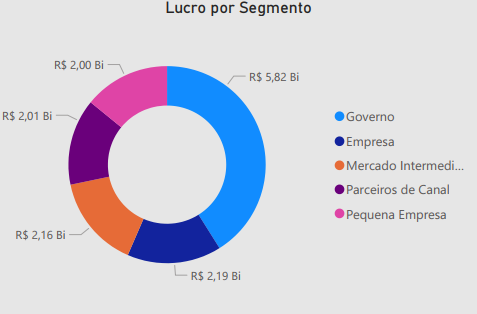

Projeto: Dashboard Auto Solutions - Análise de Performance de Vendas e Lucratividade
Introdução
Este projeto consiste na criação de um Dashboard desenvolvido no Power BI, com o objetivo de oferecer uma visão abrangente e detalhada sobre a performance de vendas, custos e lucratividade no setor automotivo. A solução foi concebida para auxiliar gestores e analistas a monitorar os principais indicadores financeiros e operacionais por produto, data, segmento e geografia, permitindo a identificação de oportunidades e desafios para otimização de estratégias comerciais e de produção.
Estrutura do Projeto
Os principais requisitos e indicadores desenvolvidos para esta análise foram:
- Visão Geral Financeira: Exibição dos totais de Vendas Brutas, Custo dos Bens Vendidos (CMV) e Lucro Total, fornecendo um panorama rápido da saúde financeira.
- Performance por Produto: Análise do Custo dos Bens Vendidos e das Vendas Brutas discriminadas por modelos de veículos (Fiat Toro, Jeep Renegade, Honda HR-V, Ford EcoSport, Volkswagen T-Cross, Hyundai Creta).
- Lucro por Segmento: Detalhamento do lucro gerado pelos diferentes segmentos de mercado (Governo, Empresa, Mercado Interno, Pequenas Empresas, Parceiros).
- Unidades Vendidas: Quantificação das unidades vendidas por produto e por país, permitindo identificar os veículos mais populares e os mercados de maior volume.
- Tendência de Vendas Brutas: Visualização da evolução das vendas brutas ao longo do tempo, para identificar sazonalidades e tendências.
Tecnologias Utilizadas
Para a construção deste dashboard, as tecnologias utilizadas foram:
Power BI Desktop: Para conectar as fontes de dados, modelar as informações, criar as métricas necessárias e desenvolver os visuais interativos que compõem o painel. Sua capacidade de transformar dados complexos em insights visuais foi crucial para o projeto.
Figma: A prototipação e o design do dashboard foram feitos com o Figma.
Processo de ETL (Extração, Transformação e Carregamento)
O processo de ETL para este dashboard seguiu as etapas de:
- Extração: Os dados foram obtidos de suas fontes originais, provenientes de sistemas de gestão de vendas, estoque e contabilidade. Os dados foram exportados de um
.csv, contendo informações sobre produtos, datas de venda, custos, preços de venda, segmentos de clientes e países. - Transformação: Utilizando o Power Query, a ferramenta de transformação de dados do Power BI, foram realizadas operações de limpeza e enriquecimento. Isso incluiu:
- Padronização de nomes de produtos e segmentos.
- Tratamento de dados temporais para permitir análises por data e período.
- A modelagem de dados foi cuidadosamente definida, estabelecendo relacionamentos entre tabelas, garantindo a correta agregação e filtragem das informações.
- Carregamento: Após todas as transformações e a modelagem estarem concluídas e validadas, os dados foram carregados no modelo de dados do Power BI, ficando prontos para a criação dos relatórios e dashboards.
Dashboard
O Dashboard Auto Solutions apresenta, de forma clara e intuitiva, um layout que prioriza a visibilidade dos indicadores mais importantes no topo, seguido por análises mais detalhadas. Os visuais são diversificados, incluindo cartões de indicadores chave, gráficos de barras para comparações por produto e geografia, gráficos de segmento para lucro, e gráficos de linha para tendências temporais, permitindo que os usuários explorem os dados a fundo, filtrando por produto, segmento ou período, e assim obtenham insights específicos para suas necessidades.
Insights
A análise dos dados apresentados no Dashboard revela informações cruciais sobre a performance do negócio:
- Performance Financeira Global:
- O dashboard inicia com um forte panorama financeiro, indicando um Total de Vendas Brutas de R$ 39,56 Bilhões.
- O Custo dos Bens Vendidos (CMV) é de R$ 25,38 Bilhões.
- Isso resulta em um Lucro Total expressivo de R$ 14,18 Bilhões.
Esses indicadores macro demonstram uma operação de vendas robusta e um controle de custos eficaz, culminando em uma lucratividade saudável para o período analisado.

- Vendas Brutas e Custos por Produto:
- Analisando o “Custo dos Bens Vendidos e de Vendas Brutas por Produto”, observa-se que veículos como a Fiat Toro e o Jeep Renegade são os que apresentam os maiores volumes financeiros.
- A Fiat Toro registra Vendas Brutas de R$ 10 Bilhões e um Custo dos Bens Vendidos de R$ 4 Bilhões.
- O Jeep Renegade também se destaca com Vendas Brutas de R$ 5 Bilhões e CMV de R$ 3 Bilhões.
Essa granularidade permite identificar os produtos que mais contribuem para a receita e os custos associados, direcionando a atenção para a otimização da margem por produto.
- Lucro por Segmento de Mercado:
- A análise do “Lucro por Segmento” é crucial para entender a contribuição de cada tipo de cliente, conforme visualizado no gráfico de rosca.
- O segmento de Governo demonstra ser o mais lucrativo, com R$ 5,82 Bilhões de contribuição, destacando-se como o maior gerador de lucro.
- Em seguida, os segmentos de Empresa (R$ 2,19 Bilhões) e Mercado Intermediário (R$ 2,16 Bilhões) são os próximos em termos de lucratividade, demonstrando a importância desses mercados para a receita total.
- Os Parceiros de Canal (R$ 2,01 Bilhões) e a Pequena Empresa (R$ 2,00 Bilhões) também contribuem significativamente, embora com valores ligeiramente menores.
Essa clara distinção de lucratividade por segmento permite que a empresa avalie onde seus esforços de vendas e marketing estão gerando o maior retorno, e onde pode haver oportunidades para otimizar estratégias para segmentos com menor contribuição.

- Unidades Vendidas por Produto e País:
- Em termos de volume, a Fiat Toro lidera com 0,25 Milhões de unidades vendidas, seguida de perto pela Honda HR-V (0,24 Milhões) e Jeep Renegade (0,23 Milhões).
- Geograficamente, o Canadá é o país com maior volume de vendas (0,25 Milhões), igualando o desempenho da Fiat Toro em unidades. Outros mercados importantes incluem França (0,23 Milhões), Estados Unidos (0,20 Milhões), México (0,20 Milhões) e Alemanha (0,20 Milhões).
Esses dados são valiosos para a gestão de estoque, logística e para direcionar campanhas de vendas regionalizadas.
- Tendência de Vendas Brutas por Data:
- O gráfico “Vendas Brutas por Data” mostra a evolução das vendas no período de janeiro a julho de 2014.
- Observa-se que as vendas brutas iniciam em R$ 2,00 Bilhões em janeiro de 2014, com picos em R$ 2,16 Bilhões e R$ 2,19 Bilhões em alguns meses subsequentes.
Essa visualização temporal é fundamental para identificar padrões de vendas, sazonalidades e o impacto de quaisquer iniciativas de marketing ou eventos específicos que ocorreram no período.
Considerações
O Dashboard oferece uma base robusta para a tomada de decisões estratégicas no setor automotivo. A partir dos insights obtidos, algumas considerações importantes surgem:
- Otimização da Margem por Produto: Com a clara visualização das Vendas Brutas e CMV por produto, a empresa pode aprofundar a análise de custo-benefício de cada modelo. Isso pode levar a decisões sobre otimização de processos de produção, negociação com fornecedores ou até mesmo ajuste de estratégias de precificação para modelos específicos que demonstrem margens menores.
- Estratégias de Mercado por Segmento e País: A análise de lucro por segmento e unidades vendidas por país permite que a empresa direcione seus esforços de vendas e marketing de forma mais eficaz. Por exemplo, se o segmento “Governo” ou “Empresa” for altamente lucrativo, a empresa pode investir mais em equipes de vendas B2B. Da mesma forma, entender os mercados com maior volume de unidades vendidas, como Canadá, EUA e países da Europa (França, Alemanha), pode influenciar a alocação de recursos de distribuição e publicidade.
- Gestão de Estoque e Demanda: A identificação dos modelos com maior volume de vendas (Fiat Toro, Honda HR-V, Jeep Renegade) é vital para a gestão de estoque. Manter níveis adequados desses veículos evita perdas de vendas por falta de produto e otimiza os custos de armazenagem. A análise temporal das vendas brutas (Jan-Jul 2014) pode ser expandida para prever picos e vales de demanda, permitindo uma cadeia de suprimentos mais reativa e eficiente.
- Identificação de Oportunidades de Crescimento: Ao entender quais produtos e mercados estão performando bem, a empresa pode buscar replicar esses sucessos em outras regiões ou para outros modelos. Por outro lado, produtos e mercados com desempenho inferior podem ser alvo de investigações para entender os motivos e desenvolver planos de recuperação.
Conclusão
O Dashboard foi uma ferramenta analítica de excelência que transforma o conjunto de dados em informações acionáveis. Sua principal contribuição reside na capacidade de:
- Fornecer um controle financeiro detalhado, desde o panorama global de vendas e custos até a lucratividade por produto e segmento.
- Identificar os produtos e mercados de maior sucesso em termos de volume de vendas.
- Permitir a análise de tendências temporais para uma gestão de demanda mais eficaz.
Este projeto demonstra a habilidade em criar soluções de Business Intelligence que capacitam organizações a entender profundamente sua performance, otimizar operações, mitigar riscos e, em última instância, impulsionar o crescimento e a lucratividade no competitivo mercado automotivo. É um exemplo claro de como a visualização de dados pode ser um diferencial estratégico.
Link para o Dashboard:
Clique aqui para acessar o relatório no Power BI